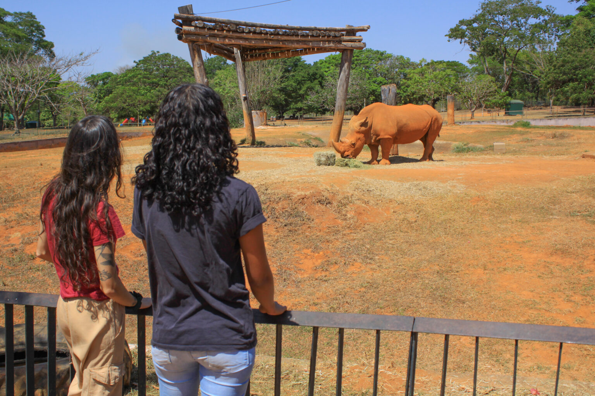
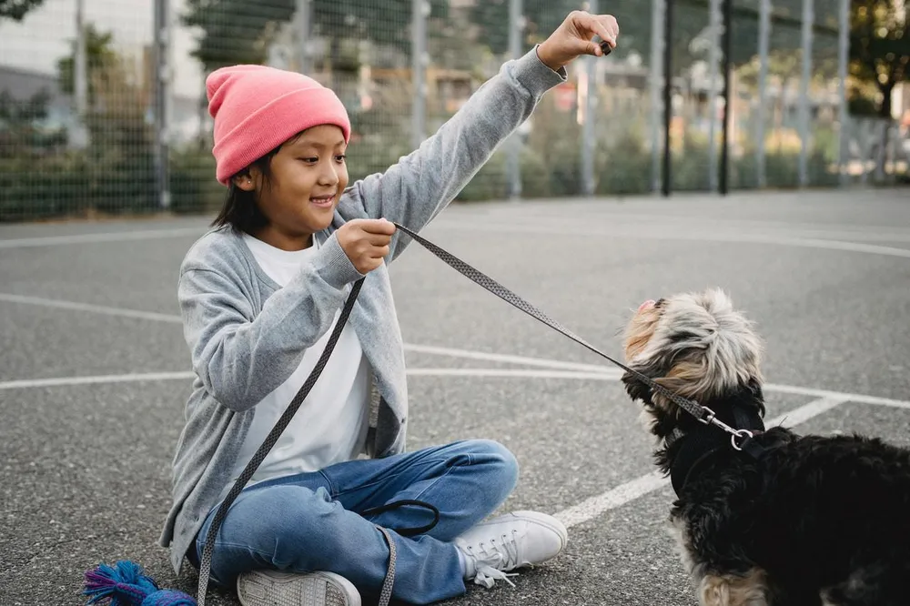
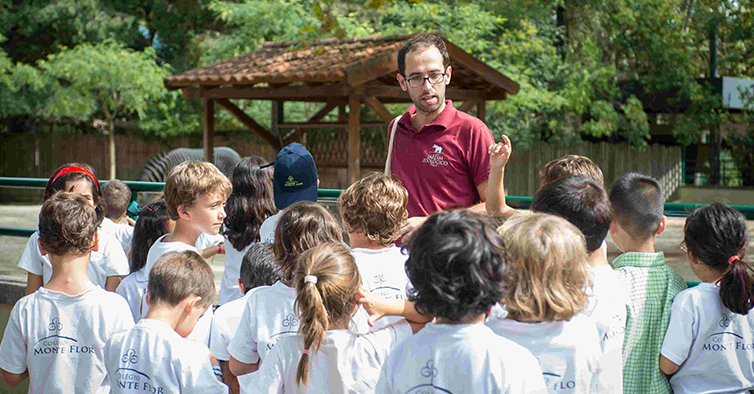

A educação dos animais é essencial para garantir uma convivência harmoniosa entre eles e os seres humanos.
Desde filhotes, os animais podem aprender regras básicas de comportamento, como onde fazer suas necessidades, o que podem ou não morder e como interagir de forma respeitosa com as pessoas e outros animais.
O adestramento positivo, baseado em recompensas e reforços, é uma das melhores formas de ensinar comandos e incentivar boas atitudes. Além disso, a paciência e a consistência dos tutores são fundamentais para um aprendizado eficaz. Educar um animal não significa apenas ensiná-lo a obedecer, mas também proporcionar um ambiente seguro, com amor e respeito, garantindo seu bem-estar físico e emocional..Os animais são expostos a ambientes que simulam seus habitats naturais para garantir que se sintam confortáveis e possam expressar seus comportamentos naturais.
São utilizados brinquedos, desafios e atividades que estimulam a mente dos animais, evitando o estresse e incentivando a criatividade na busca por alimento e interações.
Os tratadores utilizam reforço positivo, como recompensas e carinho, para treinar os animais em comandos básicos e facilitar exames veterinários sem causar estresse.
Os visitantes podem aprender sobre a vida selvagem por meio de palestras, interações supervisionadas e visitas guiadas que ensinam a importância da preservação.
